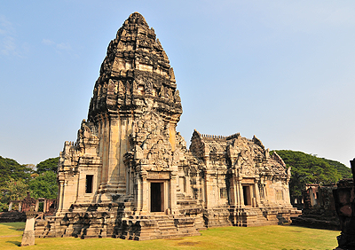
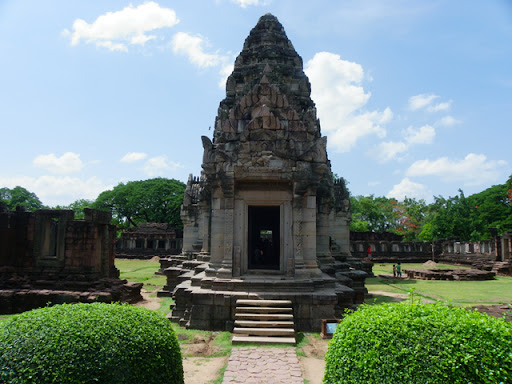
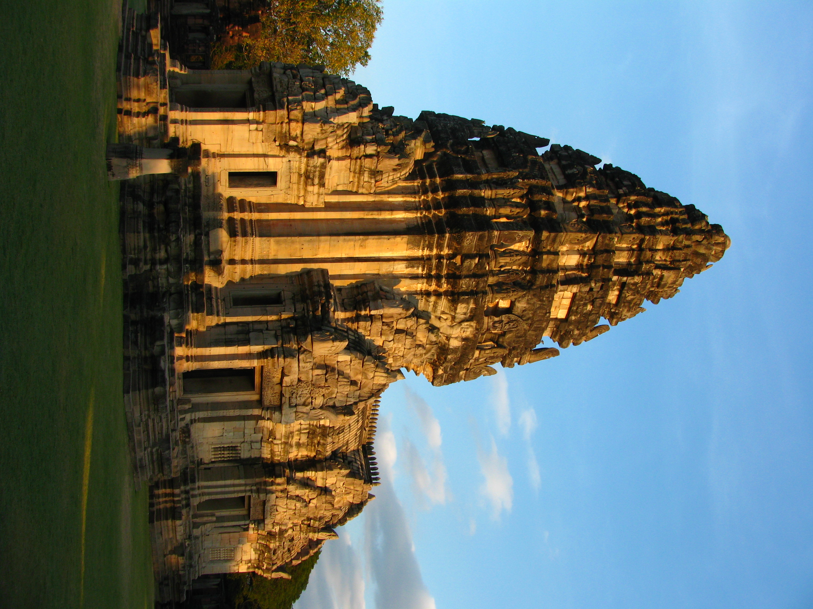
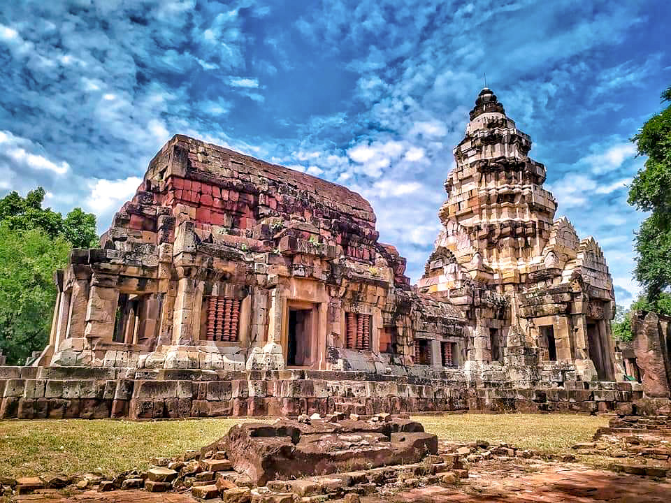
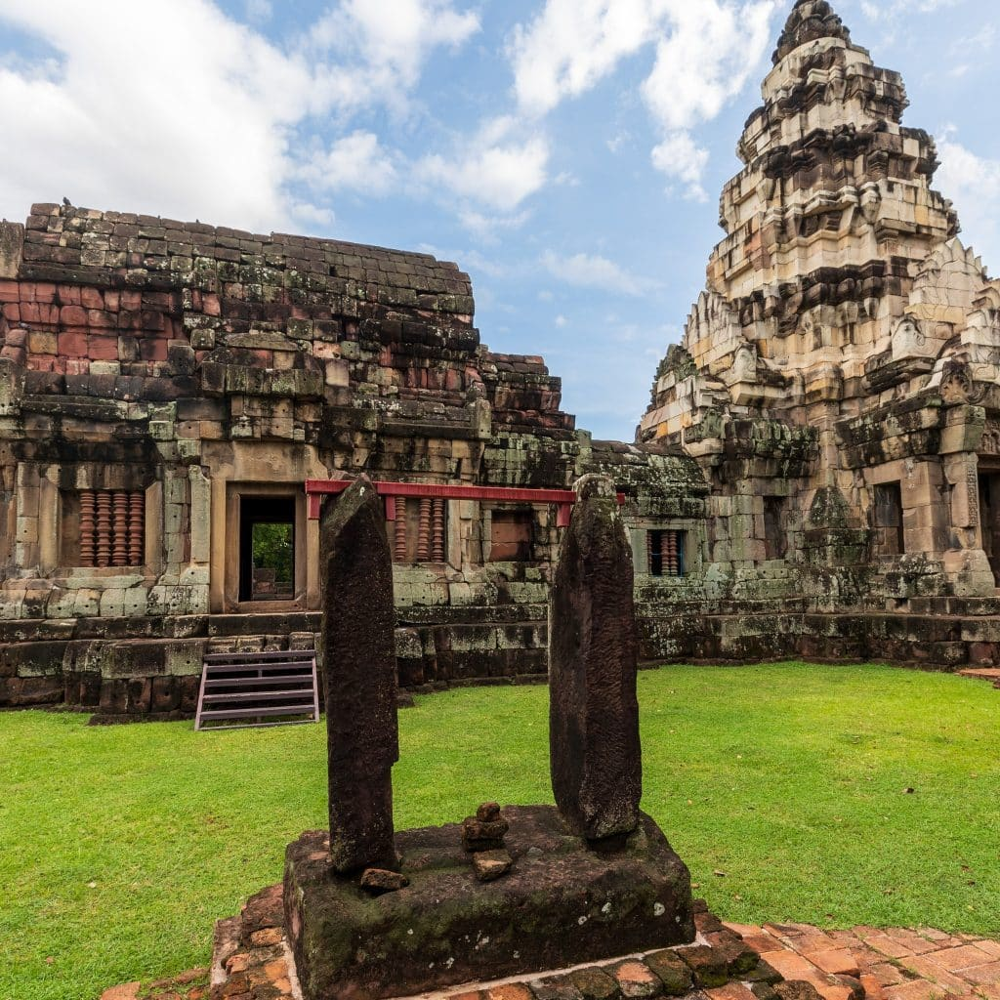
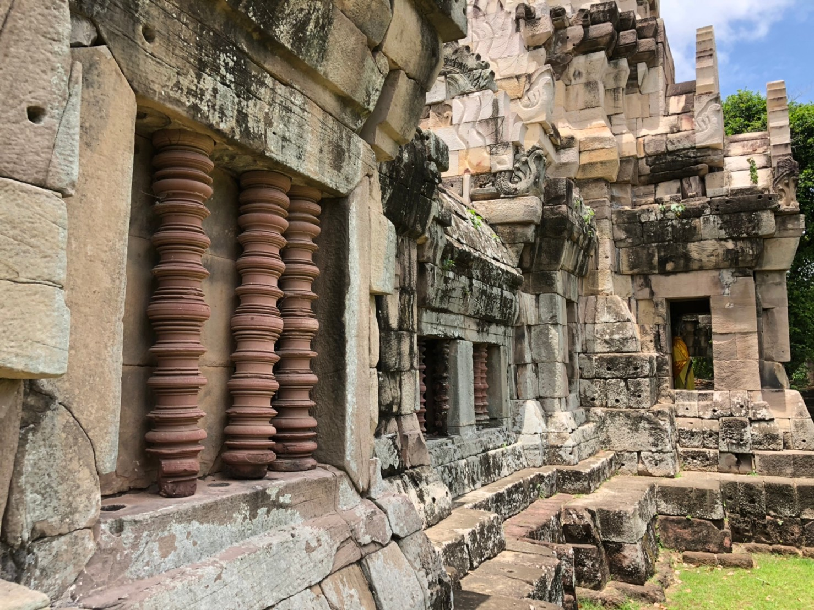

import
ยินดีต้อนรับ นักท่องเที่ยวทุกท่านที่มาใช้บริการเว็บไซต์ Go Korat
เว็บไซต์นี้จะเน้นไปที่การดูแลอำนวยความสะดวกให้กับผู้ใช้งานที่มีความต้องการในการท่องเที่ยวในจังหวัดนครราชสีมา
ทางเรายินดีบริการให้ข้อมูลแหล่งท่องเที่ยว ที่พักตามแหล่งท่องเที่ยวต่างๆ ประเพณี วัฒนธรรม รวมไปถึงอาหารชื่อดังในจังหวัดนครราชสีมา
แหล่งท่องเที่ยว
1.แหล่งท่องเที่ยวเชิงประวัติศาสตร์
1.1 อุทยานประวัติศาสตร์พิมาย
เป็นปราสาทหินที่มีขนาดใหญ่ที่สุดในประเทศไทย ซึ่งอยู่ภายใต้การดูแลของกรมศิลปากร กระทรวงวัฒนธรรม
ตั้งอยู่ในอำเภอพิมาย จังหวัดนครราชสีมา เริ่มสร้างขึ้นเมื่อราวพุทธศตวรรษที่ 16 เพื่อใช้เป็นเทวสถานของศาสนาพราหมณ์ และเปลี่ยนเป็นพุทธศาสนานิกายมหายาน ในเวลาต่อมา



1.2 ปราสาทหินพนมวัน
เป็นโบราณสถานสถาปัตยกรรมในคติความเชื่อของเขมรโบราณ เป็นปราสาทหินที่มีขนาดใหญ่เป็นอันดับ 5 ของประเทศไทย ตั้งอยู่ที่บ้านมะค่า
ตำบลบ้านโพธิ์ ถนนสายโคราช-ขอนแก่น อำเภอเมืองนครราชสีมา จังหวัดนครราชสีมา สันนิษฐานว่า เดิมปราสาทหินพนมวันก่อสร้างด้วยอิฐในราวพุทธศตวรรษที่ 15 ต่อมาในราวพุทธศตวรรษที่ 18-19 จึงได้สร้างอาคารหินซ้อนทับลงไป มีลักษณะคล้ายครึงกับปราสาทหินพิมายแต่มีขนาดเล็กกว่า


